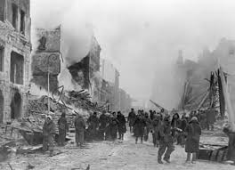

Опсада Лењинграда почела је 8. септембра 1941. године, када су немачке и финске снаге опколиле град у оквиру операције Барбароса. Хитлер је имао за циљ да заузме Лењинград, велики индустријски центар и симболични град, и изгладњи га до колапса. Почетни немачки напад брзо је прекинуо копнени приступ граду, започевши блокаду.
Опсада је трајала 872 дана, окарактерисана крајњом оскудицом и патњом за становнике града. Несташица хране и горива постала је акутна како су се залихе смањивале. Браниоци града, састављени од Црвене армије, локалних милиција и цивила, учврстили су своје положаје и одупирали се поновним немачким нападима.
Совјетска влада је организовала напоре да разбије блокаду и пружи помоћ. Најпознатији пут снабдевања био је „Пут живота“, ледени пут преко Ладошког језера, који се користио за транспорт хране и евакуацију цивила током оштрих зима. Упркос овим напорима, глад, хладноћа и бомбардовање довели су до смрти стотина хиљада цивила.
Значајни догађаји током опсаде укључивали су неколико совјетских офанзива са циљем укидања блокаде. Најзначајнија је била операција Искра у јануару 1943. којом је успео да се отвори уски копнени коридор ка граду, ублаживши део притиска на његове становнике.
Опсада је коначно окончана 27. јануара 1944, након што је велика совјетска офанзива потиснула немачке снаге из града. Крај опсаде означио је значајну совјетску победу и сведочанство о отпорности и издржљивости бранилаца и становника града.
